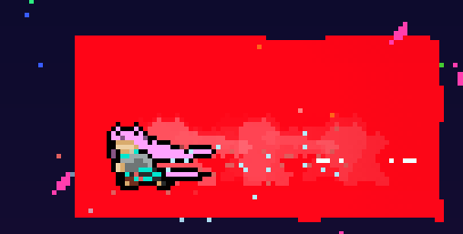

简单自定义 Trigger
如果你是一位 Mapper 的话那你一定知道 Trigger 是多么重要的存在. 在这里可能不是很能在短篇幅内说明 Trigger 的重要性, 这里只简单举几个例子:
- 绝大部分镜头的移动与偏移
- 剧情的触发, 无/单/双冲的切换
- 风的改变
- 重生点的设置
- 音乐参数的设置
- 背景的渐变, 前景的各种变换
以上几个例子不说绝大部分, 也有很大的占比都是由 Trigger 完成的.
Trigger 是 Entity 的子类, 它带有一个长方形的碰撞箱, 通常它是对玩家不可见的, 当玩家 进入(OnEnter), 保持(OnStay), 离开(OnLeave) 会分别执行不同的动作,
比如说当玩家 进入 改变风的 Trigger 时会改变场上的风的情况, 当玩家 保持 在镜头偏移改变 Trigger 里时会保持镜头相对于玩家的偏移于一个值.
Info
在官图第九章假心附近的 Trigger 看上去就像:

在这里, 左边有个设置重生点的 Trigger, 中间有个保持镜头位置的 Trigger, 而在右边有个更改背景的 Trigger.
那么, 是时候制作一个属于我们自己的 Trigger 了, 简单起见这里我们只做几个最简单的功能:
- 它叫
SetPassByRefillDashesTrigger - 玩家进入后修改场上所有我们之前的
PassByRefill实体的冲刺数 - 没了, 是的, 就是这么简单!
像对 Entity 一样地做准备工作
首先在代码中准备我们的类, 不过这次我们继承的是 Trigger. 哦对了, 它还会要求声明一个带参的构造函数,
因为 Trigger 基类没有无参构造器, 所以你可能需要像如下一样声明一下:
| SetPassByRefillDashesTrigger.cs | |
|---|---|
1 2 3 4 5 6 7 8 9 | |
然后我们稍作更改, 以让它也能提取到一个叫
dashes 的数据:
| SetPassByRefillDashesTrigger.cs | |
|---|---|
1 2 3 4 5 6 7 | |
构造函数链
形如 : base(data, offset) : this(position) 的这种语法叫做构造函数链, 这一部分似乎很多 C# 教程没有特别提及,
如果你对此不是很了解的话我推荐你去查阅了解该语法.
你可能注意到 Trigger 一般都是有宽度和高度的, 在这里我们并没有用 EntityData data 去获取, 而且我们也没设置它的 Position!
实际上当你 : base(data, offset) 时这些事情已经由父类 Trigger 的构造函数做了, 如果你好奇可以翻阅 Trigger 构造函数附近的代码.
Trigger.Trigger(EntityData data, Vector2 offset)
1 2 3 4 5 6 7 8 | |
Trigger 的实际功能
ok 现在让我们想想我们的 Trigger 的功能如何实现. 它大概就是:
- 检测玩家是否进入
- 设置场上所有
PassByRefill的Dashes字段
- 设置场上所有
- 没了
在这里我们会使用 Trigger 的 OnEnter 虚函数, 它会在玩家首次进入的1帧被调用1次.
| SetPassByRefillDashesTrigger.cs | |
|---|---|
1 2 3 4 | |
Note
蔚蓝内部大部分虚函数重写时最好在开头调用一遍基类的实现, 除非你真的知道它做了什么并且你真的不需要它.
然后是获取场上所有的 PassByRefill, 以便我们能设置它们的 Dashes. 这里我们会搬出一个你可能眼熟的一串:
| SetPassByRefillDashesTrigger.OnEnter(Player player) | |
|---|---|
1 2 | |
在这里或许该介绍介绍这一串是什么了, 首先我们通过 Scene 属性获取自身所在的场景, 然后获取它的 Tracker.
Tracker 是蔚蓝场景内的一个辅助类, 它可以很快的帮你筛选出场上的实体, 在这里我们使用它的 GetEntities<T> 来筛选出所有类型为 T, 也就是 PassByRefill 的实体.
部分实体在场上可能永远只有一个实例时, 比如说我们的 Player, 除非你安装了奇奇怪怪的 mod, 否则它永远只有一个实例, 这种情况下我们可以使用 GetEntity, 它只会返回一个实例.
那么你现在应该懂得之前我们写下的 Scene.Tracker.GetEntity<Player>() 是什么意思了: "使用场景的 Tracker 获取场上唯一的那个 Player 实例".
哦对了, 我们还得在我们想要 Tracker 获取的实体的类上加一个 Tracked 特性, 就像:
| PassByRefill.cs | |
|---|---|
1 2 3 4 | |
好的然后我们该设置 PassByRefill 们的 Dashes... 额等等! 你可能会发现这里的 refills 局部变量其实是个 List<Entity> 类型, 这个我不太清楚为什么,
估计是一个 Monocle 在实现中的一个小错误, 为了纠正它这里我会使用 Linq 的 Cast 来转换一下类型:
| SetPassByRefillDashesTrigger.OnEnter(Player player) | |
|---|---|
1 | |
ok, 现在我们就可以开始遍历并设置了:
| SetPassByRefillDashesTrigger.OnEnter(Player player) | |
|---|---|
1 2 3 4 | |
最后, 你的代码应该总体上是这个样子:
| SetPassByRefillDashesTrigger.cs | |
|---|---|
1 2 3 4 5 6 7 8 9 10 11 12 13 14 15 16 17 18 19 20 21 22 23 24 25 | |
Loenn 配置
ok 我们的 Trigger 的代码已经写好了, 接下来写一个 Loenn 配置就好了, 这一步与 Entity 的很像, 不过你需要把它放到 triggers 文件夹内:
- ModFolder
- Loenn
- entities
- PassByRefill.lua
- triggers
- SetPassByRefillDashesTrigger.lua
- entities
- Loenn
内容大同小异:
| SetPassByRefillDashesTrigger.lua | |
|---|---|
1 2 3 4 5 6 7 8 9 10 11 12 13 14 15 16 17 18 19 20 | |
最后记得写个本地化信息, 不然它的名字肯定会很丑! 这一步也是很类似的:
1 2 | |
Note
别忘了编译, 不要像我一样对着 Loenn 疑惑我的 trigger/实体 怎么不见了(
效果
现在在你的地图上摆放这个 trigger 以及几个 PassByRefill.
我在这里会摆几个背景砖来帮我们辨识这个 trigger 在哪, 因为 trigger 通常都是不可见的 (或者你可以通过 ~ 键或者下载 CelesteTAS 这个 mod 来查看碰撞箱).

那么见证你的杰作吧!
进入 trigger 前 (PassByRefill 的 Dashes 设置为 2):

进入 trigger 后 (被设置为 1 了):

最后
我们目前实现的那个 Entity 与这个 Trigger 的搭配其实问题繁多, 比如 Entity 如果在 Trigger 触发后才被放置到场上,
那么冲刺数会保持它的默认, 为了解决这个问题最佳的方案是使用蔚蓝中的 Session, 我们会在后面提到它.